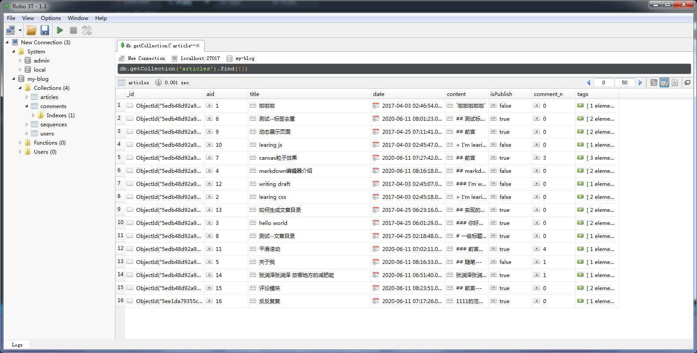

node.js简介
-
Node.js 采用了 Google Chrome 浏览器的 V8
引擎，速度非常快，性能非常好。
-
同时还提供了很多系统级的 API，如文件操作、网络编程等。
-
浏览器端的 Javascript
代码在运行时会受到各种安全性的限制，对客户系统的操作有限。相比之下，Node.js
则是一个全面的后台运行时，为 Javascript
提供了其他语言能够实现的许多功能。
1.事件与回调函数
-
Node.js实现异步的核心是事件驱动。也就是说，它把每一个任务都当成事件来处理，然后通过Event
Loop模拟了异步的效果,
而能体现事件驱动机制本质的最简单形式就是函数的回调。
-
Node中的绝大多数对象，比如HTTP请求，响应，流，都是实现了EventEmitter模块，所以它们可以触发或监听事件。
2.单线程
-
Node.js可以在不新增额外线程的情况下，依然可以对任务进行并发处理
—— Node.js是单线程的
-
它通过事件轮询（event
loop）来实现并发操作，对此，我们应该要充分利用这一点 ——
尽可能的避免阻塞操作，取而代之，多使用非阻塞操作
3.非堵塞异步IO
-
Node.js实现异步的核心是事件驱动。也就是说，它把每一个任务都当成事件来处理，然后通过Event
Loop模拟了异步的效果,
而能体现事件驱动机制本质的最简单形式就是函数的回调。
Mongoose是在node.js异步环境下对mongodb进行便捷操作的对象模型工具

node vs php
-
Node.js 他用的是JavaScript引擎，那么注定它是单线程
，使用异步方法开辟多个任务，无需像php等待上个任务线程使用结束之后给下个使用，
PHP也是单线程但是它借用Apache服务器提供多线程服务
-
php ： 优化sql
，用组件，用缓存，为了让线程尽快结束，进行下一次任务
node：单线程 、异步、事件驱动